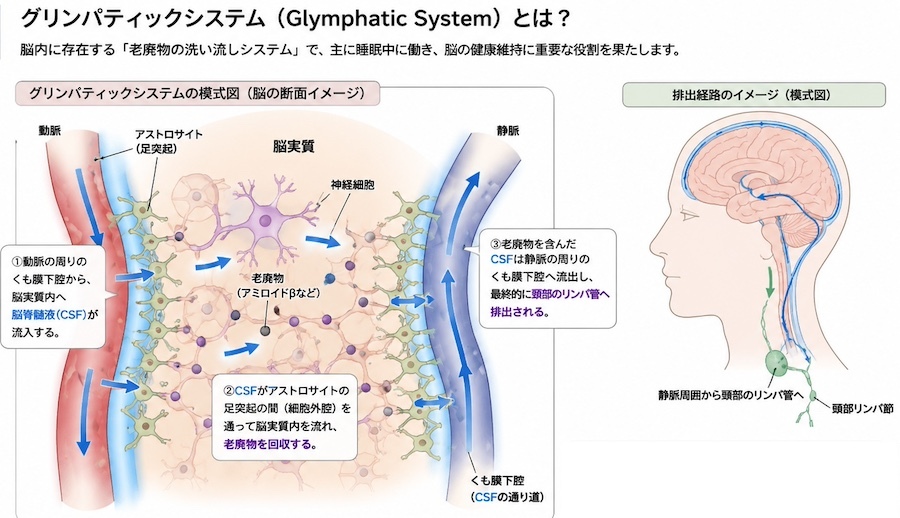

公開日：2026年8月 ｜ 最終更新：2026年8月
「脳」は、「情報処理センター」であり、外の世界と体の状態をもとに、行動や感情、思考をコントロールしています。
| 部位 | 機能・役割 |
|---|---|
| 大脳皮質 | 感覚・運動・言語・思考・判断などの“高次機能”を担います。 前頭葉は意思決定や性格、側頭葉は記憶や言語、 頭頂葉は空間認知、後頭葉は視覚処理などの役割があります。 |
| 海馬 | 新しい記憶を作る中枢で、アルツハイマー型認知症などで ダメージを受けやすい部分として有名です。 |
| 小脳 | バランスや運動の微調整に関わります。 最近では運動だけでなく認知機能にも関わることが分かってきています。 |
| 視床・視床下部など | 情報の中継や、自律神経、ホルモン分泌、体温や 睡眠リズムの調整など“生命維持”に直結する役割を持ちます。 |
脳はこうした領域同士がネットワークを作り、電気信号と化学物質で情報をやり取りすることで、学習・記憶・感情などを生み出しています。
シナプスという神経細胞同士の接点が可塑的に変化することが、学習や記憶の基盤と考えられています。
一般的に、「加齢にともなって脳は少しずつ萎縮し、神経細胞同士のつながりも減少」していきます。
「脳の萎縮を進行させる要因」として、
などが報告されています。
脳を元気に保つ毎日の習慣 ～今日からできる５つのこと～
脳のゴミの正体は、「アミロイドβ」と呼ばれる特殊なたんぱく質のことです。 これが脳の中に少しずつ溜まってしまうと、大切な脳の神経細胞を傷つけ、アルツハイマー型認知症を引き起こす原因になるといわれています。 本来、私たちの脳にはこのアミロイドβをきちんと排出する「お掃除機能」が備わっています。
それ以外に、
| 脳のゴミ | 解説 |
|---|---|
| アミロイドβ | 上述 |
| タウタンパク質 | アルツハイマー病に関係するたんぱく質、 異常な状態で固まり、糸くずのように沈着したもの |
| 酸化ストレス関連物質 | 活性酸素などにより酸化された「変性たんぱく質」や「脂質酸化物」 機能しない老廃物として蓄積する |
| 糖化最終生産物(AGEs） | 糖とタンパク質が長く結びついた「焦げつき」のような物質、 脳内でも長期間使われた物質の劣化産物として蓄積する |
| 異常なアミロイドβオリゴマー | アミロイドβそのものではなく、いくつかがまとまった形態で、 強い毒性を持つ老廃物として注目されている |
近年注目されているのが「グリンパティックシステム」という 脳の老廃物排出機構に関する仮説です。
体のリンパ管に似た働きを脳でしている仕組みと考えられています。

概略は
この一連の流れを支えているのが、グリア細胞（特にアストロサイト）と、その細胞膜にある「AQP4」という水チャネルです。
また、血液脳関門（脳にある血管の壁）にある「P糖タンパク質（P-gp）ポンプ」という排出装置が、脳外へとゴミを運び出してくれます。
グリンパティックシステムは、特に睡眠中に活発になることが動物実験などから示されています。
「眠っているあいだは、脳細胞同士の隙間が広がり、脳脊髄液が流れ込みやすくなる」
その結果、覚醒時よりも老廃物の除去効率が高まると報告されています
この機能がうまく働かないと、アミロイドβやタウタンパク質などが脳内にたまりやすくなり、認知症の一因になる可能性があると考えられています。
特に、「深いノンレム睡眠」中に最も活発になると言われています。
脳のゴミ出しには、「睡眠」が最重要です。
グリンパティック・システムは脳脊髄液の流れと血流に影響されると考えられています。
食事や炎症レベルも、脳の老廃物蓄積と関連する可能性があります。
慢性的なストレスは脳の炎症を高め、睡眠の質も悪くします。
適度に脳を使うことも、健康維持に役立つとされています。
「脳」は加齢とともに変化しますが、生活習慣によってその変化を緩やかにすることが期待できます。
十分な睡眠、適度な運動、人との交流、バランスの良い食事、新しいことへの挑戦は、脳の健康維持に役立つと考えられています。
特に、「脳のゴミを洗い流す（グリンパティックシステム）」を考えると、「睡眠」について注意を払うことが需要でしょう！
今日からできる小さな習慣を続けることが、将来の脳の健康につながります。